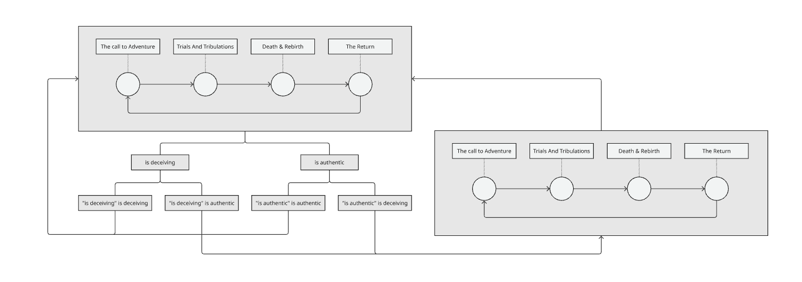
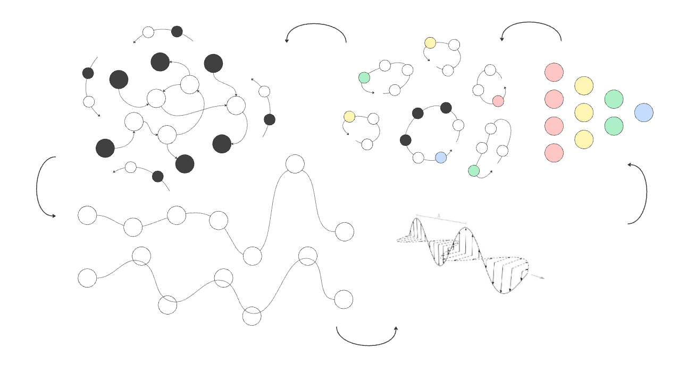

We feel pleasure and pain, and act towards the attainment of that which we desire. As soon as delay is introduced between the attainment of that which we desire and the actions we take to attain it, we simultaneously introduce the concept of a narrative. The narrative is the prediction of the environment that results from the set of actions that are being rehearsed. The simplest narratives are produced by rehearsal of the primary and secondary instinct, actions that move us towards satiation-reward, delivering us to environments that are pleasing and predictable. The tertiary instinct can be thought of as the instinct to move towards action-incentive and away from action-punishing environments, possibly at the expense of known paths to satiation-reward. It can be thought of as agency or exploration. The quaternary and quinary instincts can be thought of as instinct to move towards action-punishing or satiation-punishing environments, in physical and socio-emotional contexts respectively, also at the possible expense of existing known pathways. These instincts can be thought of strategies of engagement with reward and punishment horizons both short and long term. We can imagine these instincts like combative personalities, for which strategic cooperation and non-cooperation exist.
The monomyth is perhaps the most fundamental of narrative templates, and maps closely to the language of action and satiation, reward and punishment. The sequence of satiation-rewarding, action-rewarding, action-punishing, satiation-punishing, action-rewarding and, to close the loop, satiation-rewarding, expresses the monomyth. In less idiomatic terms, the protagonist is incentivised to depart from that which is familiar, face challenges, lose hope, gain hope, overcome challenges, and rest in the new world that has become familiar.

The concept of the monomyth closely relates to the concept of self, given that the monomyth can be put in terms of action, satiation, reward, and punishment, and a simple definition of 'self' is the thing that acts to maximise perceived reward across time. An individual could take a set of actions adhering to a monomythic structure, and still feel an absence of meaning. We can nest the monomythic structure within itself, and describe this feeling as a sort of meta call to adventure: a transition towards the mode of engagement that perceived as being more closely tied to the notion of self.
In the traditional monomythic structure, the risk of leaving the known world is death without rebirth. In the meta-structure, the risk of leaving the known structure is the death of the meaning inherit to the monomythic journey being undertaken. Departure from the known scaffold may be like a protagonist reading their film's script before a moment of triumph or despair, or it may be like waking from a stagnant dream into a world where waking life feels more real, a world that could be beautiful or horrifying. The uncertainty of these outcomes define the risk of answering the meta-call.

So far we have been thinking of narratives at a macro-level. Habits may be a more appropriate description for these narratives at a micro-level. Entropic path-traversal heuristics apply nicely to this view of habits. We encode action pathways as node-edge paths and thus traversal of path cycles as rehearsal of action sequences. Action sequences along this structure converge, diverge and cycle, and can be loosely categorised as follows: